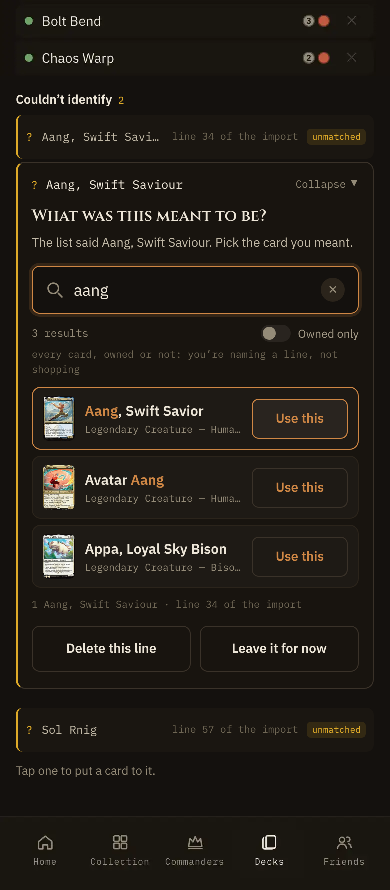
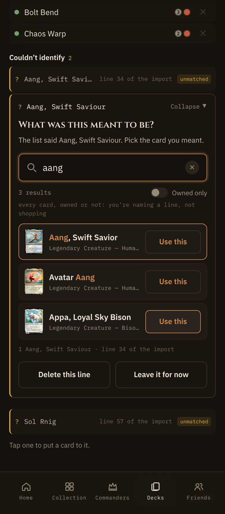
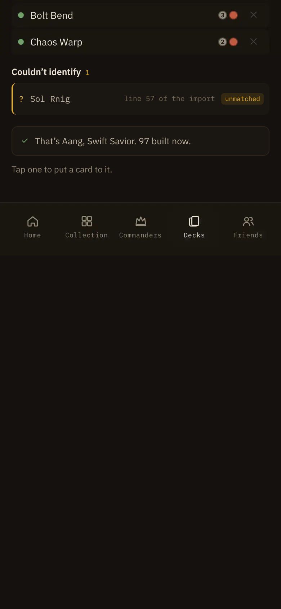
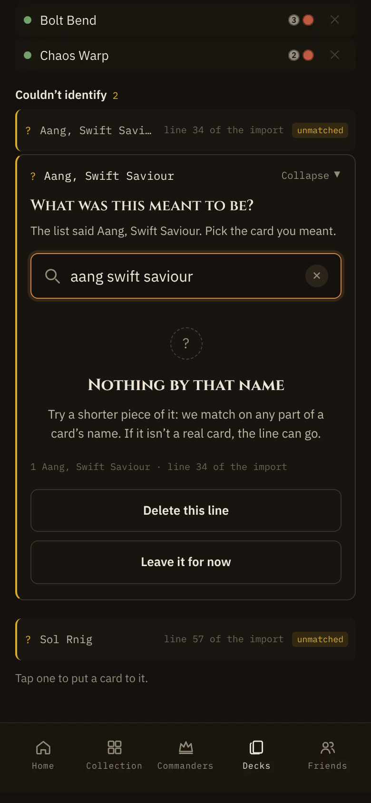

Deck import · addendum · phone Use · R1
States of the action cell
All at 390, phone, touch. The import line is “Aang, Swift Saviour” (line 34); the player typed “aang”.
S1 · default and active

Row 1 is active (accent edge); rows 2 and 3 are default. The same Use on all three.
S2 · pressed, active row

Finger down anywhere on row 1: the ghost takes --elevated and --accent.
S3 · pressed, another row

The same press look on any row. Lifting the finger uses that card.
S4 · pending

Straight after Use: the line is gone, the card is in the deck and the note says so while it saves. Shipped, unchanged.
17 · nothing found

No results, so no action cell. Shipped, unchanged.